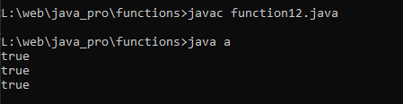

Write a Java method that accepts three integers and returns true if one is the middle point between the other two integers, otherwise false
Code:-
class a {
public static void main(String[] args) {
System.out.println(isMiddle(10, 15, 20)); // Returns true
System.out.println(isMiddle(10, 20, 15)); // Returns true
System.out.println(isMiddle(10, 15, 10)); // Returns false
}
public static boolean isMiddle(int a, int b, int c) {
// First sort the numbers in ascending order
int mid = a <= b ? (b <= c ? b : Math.max(a, c)) : (a <= c ? a : Math.max(b, c));
// Check if the middle number is between the other two
return (mid - a) * (mid - c) <= 0;
}
}
Output:-
